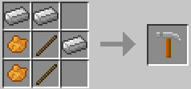

| Product |
Ingredients |
Recipe |
Notes |
| Sawbench |
2 iron ingots 1 circular saw blade 1 large pulley 1 wooden pressure plate 4 sticks |
||
| Circular Saw Blade |
4 iron ingots 1 stick |
||
| Large Pulley |
4 wooden planks 1 stick |
||
| Hammer |
3 iron ingots 2 sticks 2 orange dye |
 | |
| Chisel |
1 iron ingot 1 stick 1 orange dye |